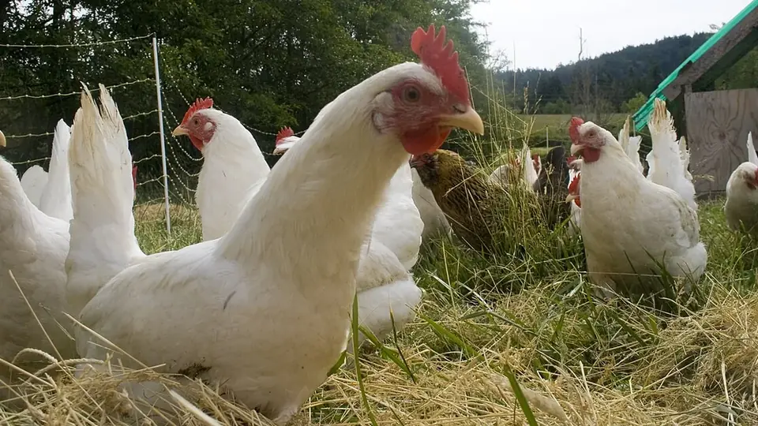

खेती की कमाई साल में दो बार आती है, पर घर के पीछे की 25–50 मुर्गियाँ हर हफ्ते पैसे देती हैं — वह भी लगभग बिना दाने के खर्च के।
✍️ Kunal Rajput — KrashiMitra⏱️ 10 मिनट पढ़ें📅 अगस्त 2026

बैकयार्ड मुर्गी पालन — मुर्गियाँ खुले में चरकर अपना ज़्यादातर दाना खुद जुटा लेती हैं।
कम लागत, कम जोखिम — पिछवाड़े से चलने वाला धंधा
🐔
25–50
शुरुआत के लिए पक्षी
🏠
1 वर्ग फुट
प्रति पक्षी रात का बाड़ा
💉
रानीखेत
सबसे बड़ा खतरा
📖
भूमिका
खेती की कमाई साल में दो-तीन बार आती है — बुवाई से कटाई तक का पूरा इंतज़ार। लेकिन घर के पीछे रखी 20–50 देसी मुर्गियाँ हर हफ्ते पैसे देती हैं, और उनका खर्च लगभग शून्य होता है, क्योंकि वे घर का बचा अनाज, दीमक, कीड़े और खेत की घास खाकर पल जाती हैं। इसे बैकयार्ड (पिछवाड़े का) मुर्गी पालन कहते हैं।
यहाँ सबसे बड़ी गलतफहमी यह है कि किसान ब्रॉयलर (सफेद मुर्गी) की सोच लेकर शुरू करता है — महँगा दाना, बंद शेड, बड़ा निवेश और बाज़ार का जोखिम। बैकयार्ड पालन इसका उल्टा है: देसी और उन्नत देसी नस्लें, खुला घूमना, बहुत कम दाना, और अंडे-मुर्गे दोनों का ऊँचा गाँव-भाव। इस लेख में नस्ल का चुनाव, 50 मुर्गियों का असली हिसाब, टीकाकरण, बीमारी से बचाव और सरकारी मदद — सब आसान हिंदी में।
विज्ञापन
⚖️
बैकयार्ड और ब्रॉयलर में फर्क समझ लीजिए
बिंदु
✅ बैकयार्ड (देसी/उन्नत देसी)
❌ ब्रॉयलर मॉडल
शुरुआती लागत
बहुत कम — छोटा बाड़ा काफी
शेड, फीडर, ब्रूडर — बड़ा निवेश
दाना
ज़्यादातर खुद चुगती हैं
पूरा खर्च खरीदे दाने का
रोग-प्रतिरोध
देसी नस्लें ज़्यादा मजबूत
संवेदनशील, दवा पर निर्भर
बाज़ार भाव
देसी अंडा-मुर्गा ऊँचे दाम पर
भाव उतार-चढ़ाव वाला
कमाई का ढंग
हर हफ्ते थोड़ा-थोड़ा
एक बैच पर पूरा दांव
जोखिम
कम — नुकसान भी छोटा
एक बीमारी में पूरा बैच
💡
बैकयार्ड पालन "छोटा धंधा" नहीं, "कम जोखिम वाला धंधा" है। इसकी असली ताकत यह है कि इसमें नुकसान की सीमा तय है — 10 मुर्गियाँ मरने पर भी परिवार की कमर नहीं टूटती, जबकि उतनी ही कमाई साल भर लगातार आती रहती है।
🐓
नस्ल का चुनाव — सबसे बड़ा फैसला
शुद्ध देसी मुर्गी साल में सिर्फ 50–60 अंडे देती है। ICAR के संस्थानों ने इसीलिए "उन्नत देसी" नस्लें विकसित कीं — जो दिखती और चलती देसी की तरह हैं (रंगीन पंख, खुले में घूमने लायक), पर तीन-चार गुना ज़्यादा अंडे देती हैं।
वनराजा: ICAR-डायरेक्टोरेट ऑफ पोल्ट्री रिसर्च, हैदराबाद की दोहरे उद्देश्य वाली नस्ल — अंडा और मांस दोनों। बैकयार्ड के लिए सबसे लोकप्रिय।
ग्रामप्रिया: अंडे के लिए बेहतर — गाँव की परिस्थितियों में अच्छा उत्पादन।
श्रीनिधि: तेज़ बढ़वार, अच्छा वज़न — मांस की ओर झुकी नस्ल।
कड़कनाथ: मध्य प्रदेश की काली मुर्गी, GI टैग प्राप्त। अंडे कम देती है, पर मांस का भाव कई गुना ज़्यादा — यह एक अलग, ऊँचे दाम वाला बाज़ार है।
कारी निर्भीक, कारी श्यामा, उपकारी: ICAR-CARI, इज़्ज़तनगर (बरेली) की नस्लें — देसी जैसी सहनशीलता के साथ बेहतर उत्पादन।
रेनबो रूस्टर: निजी क्षेत्र की रंगीन नस्ल, तेज़ बढ़वार, फ्री-रेंज में लोकप्रिय।
💡
चूज़े कहाँ से लें? सबसे भरोसेमंद स्रोत हैं — राज्य पशुपालन विभाग की हैचरी, कृषि विज्ञान केंद्र (KVK), और ICAR के केंद्र। कई राज्यों में विभाग 4 हफ्ते के टीका लगे चूज़े देता है, जो नए पालक के लिए सबसे सुरक्षित शुरुआत है — क्योंकि सबसे ज़्यादा मौत पहले 3–4 हफ्तों में ही होती है।
विज्ञापन
🏠
बाड़ा — सस्ता, पर तीन शर्तों के साथ
बैकयार्ड में मुर्गियाँ दिन भर बाहर घूमती हैं; बाड़ा सिर्फ रात के लिए चाहिए। लेकिन यही रात सबसे खतरनाक होती है — सियार, कुत्ता, बिल्ली, नेवला और साँप ही बैकयार्ड पालन में सबसे बड़ा नुकसान करते हैं, बीमारी नहीं।
जगह: रात के बाड़े में प्रति पक्षी लगभग 1 वर्ग फुट पर्याप्त है; दिन में खुला घूमना ज़रूरी है।
पक्की जाली: मज़बूत तार की जाली — नीचे की तरफ जाली को ज़मीन में 6 इंच गाड़ें, वरना नेवला और चूहा नीचे से खोदकर घुस जाते हैं।
ऊँचा फर्श: ज़मीन से थोड़ा ऊँचा, सूखा फर्श — नमी ही ज़्यादातर बीमारियों की जड़ है।
बैठने की डंडी (पर्च): मुर्गियाँ ऊँचाई पर बैठना पसंद करती हैं; इससे वे साफ रहती हैं।
अंडा देने के डिब्बे: हर 4–5 मुर्गियों पर एक अंधेरा, शांत डिब्बा — वरना अंडे झाड़ियों में मिलेंगे और टूटेंगे।
हवा, पर सीधी हवा नहीं: ऊपर की तरफ हवा निकलने की जगह रखें; सर्दी में सीधी ठंडी हवा से बचाएँ।
साफ पानी हमेशा: यह अकेली आदत मृत्यु दर को सबसे ज़्यादा घटाती है।
🌾
दाना — खर्च यहीं बचता है
बैकयार्ड मुर्गी अपने भोजन का बड़ा हिस्सा खुद ढूँढ लेती है — दीमक, कीड़े, केंचुए, घास के बीज, गिरा हुआ अनाज। आपको सिर्फ पूरक (supplementary) दाना देना है, आमतौर पर सुबह और शाम थोड़ा-थोड़ा।
चूज़ों (0–8 हफ्ते) को पूरा दाना दें: इस उम्र में कंजूसी नहीं — यही उम्र आगे का उत्पादन तय करती है।
बड़ी मुर्गियों को पूरक दाना: मक्का, गेहूं का चोकर, टूटा चावल, सोयाबीन खली और थोड़ा खनिज मिश्रण।
कैल्शियम ज़रूर दें: अंडा देने वाली मुर्गी को चूने का पत्थर या पिसा सीप (शेल ग्रिट) चाहिए — कमी होने पर अंडे के छिलके पतले और टूटे मिलते हैं।
रसोई और खेत का बचा माल: बचा भात, सब्ज़ी के छिलके, अनाज की सफाई का कचरा — सब चलता है।
हरा चारा: बरसीम, लूसर्न या किचन गार्डन की पत्तियाँ काटकर डालें — अंडे की जर्दी गहरी पीली होती है, जो गाँव में ज़्यादा दाम दिलाती है।
साफ पानी: गर्मी में दिन में दो बार बदलें।
💉
टीकाकरण और बीमारी — रानीखेत सबसे बड़ा खतरा
बैकयार्ड पालन में सबसे बड़ी तबाही रानीखेत रोग (Ranikhet / Newcastle Disease) मचाता है — यह पूरे गाँव की मुर्गियाँ कुछ ही दिनों में खत्म कर सकता है। इसका इलाज नहीं है, सिर्फ टीका ही बचाव है। दूसरा बड़ा खतरा मरेक्स और चूज़ों में कॉक्सीडियोसिस (खूनी दस्त) है।
रानीखेत का टीका ज़रूरी है — इसका शेड्यूल उम्र के हिसाब से चलता है और बीच-बीच में बूस्टर लगता है।
बीमार पक्षी तुरंत अलग करें — यही एक आदत पूरे झुंड को बचा लेती है।
मरे हुए पक्षी को गाड़ें — खुले में फेंकना पूरे गाँव में बीमारी फैलाता है।
नया पक्षी सीधे न मिलाएँ — 2 हफ्ते अलग रखकर देखें, फिर झुंड में डालें।
बाड़ा सूखा और साफ रखें — गीला बिछावन कॉक्सीडियोसिस का सीधा न्योता है।
कृमिनाशक (डीवर्मिंग) — पशु चिकित्सक की सलाह पर समय-समय पर।
⚠️
टीके का सही शेड्यूल, मात्रा और दवा हमेशा पशु चिकित्सक या पशुपालन विभाग से तय करवाएँ — यह नस्ल, उम्र और क्षेत्र के अनुसार बदलता है, और गलत समय पर लगाया टीका बेअसर रहता है। ज़्यादातर राज्यों में ब्लॉक स्तर के पशु चिकित्सालय में रानीखेत का टीका निःशुल्क या बहुत सस्ता मिलता है। मदद के लिए पशुधन हेल्पलाइन 1962 पर कॉल करें। बिना सलाह मुर्गियों को एंटीबायोटिक न दें — अवशेष अंडे और मांस दोनों में जाते हैं।
💰
कमाई का असली हिसाब — 50 मुर्गियों का उदाहरण
नीचे दिया गया हिसाब एक उदाहरण है, गारंटी नहीं — नस्ल, चूज़ों का दाम, दाने का भाव, मृत्यु दर और आपके इलाके का अंडा-मुर्गा भाव सब कुछ बदल देते हैं। इसका मकसद यह दिखाना है कि हिसाब कैसे लगाना चाहिए।
मद
क्या देखें
चूज़े
50 चूज़े × स्थानीय दर (4 हफ्ते के टीका लगे चूज़े लेना बेहतर)
बाड़ा
एक बार का खर्च — जाली, डंडे, छत; कई साल चलता है
दाना
सबसे बड़ा चालू खर्च; खुला घूमने से यह आधे से भी कम हो जाता है
टीका व दवा
छोटा खर्च, पर सबसे ज़रूरी — इसे कभी न काटें
मृत्यु दर
हिसाब लगाते समय नुकसान पहले से जोड़कर चलें, बाद में नहीं
अंडे की आमदनी
प्रति मुर्गी सालाना अंडे × गाँव का देसी अंडा भाव
मुर्गे की आमदनी
नर पक्षी 5–6 महीने में बिक्री लायक; देसी मुर्गे का भाव सबसे ऊँचा
खाद
मुर्गी की खाद खेत के लिए बढ़िया — यह छिपी हुई बचत है
💡
बिक्री की सबसे बड़ी चाल — सीधे ग्राहक तक जाइए। देसी अंडे और देसी मुर्गे का भाव व्यापारी के हाथ में कम और सीधे घर-घर या नज़दीकी कस्बे में ज़्यादा मिलता है। 20–30 नियमित ग्राहक बना लेने वाला पालक, बड़े फार्म से बेहतर दाम पाता है।
🏛️
सरकारी मदद कहाँ से मिलती है
राष्ट्रीय पशुधन मिशन (NLM): उद्यमिता घटक के तहत ग्रामीण मुर्गी पालन इकाई (कम से कम 1,000 पैरेंट पक्षी और मदर यूनिट) पर 50% पूँजीगत सब्सिडी, अधिकतम ₹25 लाख प्रति इकाई, दो बराबर किस्तों में। पात्र — व्यक्ति, FPO, SHG, JLG, सहकारी संस्था और धारा 8 कंपनी। बाकी रकम बैंक ऋण या स्वयं की पूँजी से।
राज्य पशुपालन विभाग की योजनाएँ: कई राज्य छोटे बैकयार्ड यूनिट (जैसे 25–50 चूज़े) के लिए मुफ्त या रियायती चूज़े देते हैं — यह छोटे किसान के लिए NLM से ज़्यादा काम की चीज़ है।
KVK प्रशिक्षण: ज़्यादातर कृषि विज्ञान केंद्र मुर्गी पालन का निःशुल्क या मामूली शुल्क वाला प्रशिक्षण देते हैं — शुरू करने से पहले यह करना सबसे अच्छा निवेश है।
KCC (पशुपालन): किसान क्रेडिट कार्ड अब पशुपालन और मुर्गी पालन की कार्यशील पूँजी के लिए भी मिलता है।
⚠️
सब्सिडी के नियम, राशि और आवेदन की प्रक्रिया समय-समय पर बदलती रहती है और राज्य के अनुसार अलग होती है। आवेदन से पहले अपने ज़िले के पशुपालन विभाग, KVK या बैंक शाखा से मौजूदा नियम की पुष्टि ज़रूर करें। KrashiMitra किसी भी योजना का एजेंट नहीं है और न ही आवेदन कराता है — किसी भी बिचौलिए को सब्सिडी दिलाने के नाम पर पैसे न दें।
🚫
ये गलतियाँ कभी न करें
रानीखेत का टीका छोड़ देना — यह अकेली गलती पूरा झुंड खत्म कर सकती है।
पहले दिन से 200 चूज़े लेना — 25–50 से शुरू करें, सीखें, फिर बढ़ाएँ।
कमज़ोर बाड़ा — सियार और नेवला एक ही रात में दर्जनों मुर्गियाँ मार देते हैं।
गीला, गंदा बिछावन — कॉक्सीडियोसिस और साँस की बीमारियों की सीधी वजह।
चूज़ों के दाने में कंजूसी — पहले 8 हफ्ते की बचत, सालभर के उत्पादन का नुकसान बन जाती है।
बीमार पक्षी झुंड में रखना — एक बीमार पक्षी पूरे झुंड को ले डूबता है।
बिना सलाह एंटीबायोटिक देना — अवशेष अंडे और मांस में जाते हैं, और प्रतिरोध भी बनता है।
सारा माल एक व्यापारी को देना — सीधे ग्राहक बनाने पर वही अंडा ज़्यादा दाम देता है।
🗓️
शुरू से बिक्री तक — कब क्या करें
चरण
ज़रूरी काम
शुरू करने से पहले
KVK से प्रशिक्षण; नस्ल तय करें; बाड़ा बनाएँ
चूज़े लाते समय
विभाग/KVK की हैचरी से 4 हफ्ते के टीका लगे चूज़े लें
0–8 हफ्ते
गर्माहट, पूरा दाना, साफ पानी; यही सबसे नाज़ुक समय है
8–20 हफ्ते
दिन में खुला छोड़ें; पूरक दाना; टीकाकरण शेड्यूल पूरा करें
5–6 महीने
नर पक्षियों की बिक्री शुरू; अंडे देने वाली मुर्गियों को कैल्शियम
बैकयार्ड मुर्गी पालन खेती की जगह लेने के लिए नहीं, खेती के बीच की खाली जेब भरने के लिए है। तीन बातें याद रखिए: उन्नत देसी नस्ल चुनें (वनराजा, ग्रामप्रिया, कड़कनाथ), रानीखेत का टीका कभी न छोड़ें, और 25–50 पक्षियों से शुरू करके सीखते हुए बढ़ें।
जिस दिन आपके 25 नियमित ग्राहक बन जाएँ, उस दिन आपका मुर्गी पालन धंधा बन चुका होता है।
विज्ञापन
❓
अक्सर पूछे जाने वाले सवाल
1बैकयार्ड मुर्गी पालन के लिए सबसे अच्छी नस्ल कौन सी है?
बैकयार्ड के लिए सबसे उपयुक्त हैं वनराजा, ग्रामप्रिया, श्रीनिधि, कड़कनाथ और कारी निर्भीक जैसी उन्नत देसी नस्लें। ये देसी की तरह खुले में घूमकर पल जाती हैं और रोग सहन कर लेती हैं, पर शुद्ध देसी (साल में 50–60 अंडे) से कई गुना ज़्यादा अंडे देती हैं। कड़कनाथ अंडे कम देती है, पर उसके मांस का भाव सबसे ऊँचा रहता है।
2मुर्गी पालन में सबसे बड़ी बीमारी कौन सी है?
रानीखेत रोग (Newcastle Disease) सबसे बड़ा खतरा है — यह कुछ ही दिनों में पूरे गाँव की मुर्गियाँ खत्म कर सकता है और इसका कोई इलाज नहीं है, सिर्फ टीका ही बचाव है। इसके बाद मरेक्स और चूज़ों में कॉक्सीडियोसिस (खूनी दस्त) आते हैं। टीके का सही शेड्यूल पशु चिकित्सक या पशुपालन विभाग से तय करवाएँ; ज़्यादातर ब्लॉक चिकित्सालयों में यह निःशुल्क या बहुत सस्ता मिलता है।
350 मुर्गियों के लिए कितनी जगह चाहिए?
रात के बाड़े में प्रति पक्षी लगभग 1 वर्ग फुट पर्याप्त है — यानी 50 मुर्गियों के लिए लगभग 50 वर्ग फुट का बाड़ा। दिन में उन्हें खुला घूमना ज़रूरी है, वहीं से वे अपना ज़्यादातर भोजन (दीमक, कीड़े, घास के बीज) खुद ले लेती हैं। बाड़े की जाली को ज़मीन में 6 इंच गाड़ें, वरना नेवला और चूहा नीचे से खोदकर घुस जाते हैं।
4बैकयार्ड मुर्गियों को कितना दाना देना पड़ता है?
बड़ी मुर्गियों को सिर्फ पूरक दाना चाहिए — सुबह-शाम थोड़ा मक्का, चोकर, टूटा चावल और सोयाबीन खली, क्योंकि बाकी वे खुद चुग लेती हैं। लेकिन 0–8 हफ्ते के चूज़ों को पूरा दाना देना ज़रूरी है — इस उम्र की कंजूसी सालभर के उत्पादन का नुकसान बन जाती है। अंडा देने वाली मुर्गी को कैल्शियम (चूने का पत्थर या पिसा सीप) ज़रूर दें, वरना छिलके पतले और टूटे मिलेंगे।
5मुर्गी पालन पर सरकारी सब्सिडी कितनी मिलती है?
राष्ट्रीय पशुधन मिशन (NLM) के तहत ग्रामीण मुर्गी पालन इकाई (कम से कम 1,000 पैरेंट पक्षी और मदर यूनिट) पर 50% पूँजीगत सब्सिडी, अधिकतम ₹25 लाख प्रति इकाई दो किस्तों में मिलती है। छोटे किसान के लिए ज़्यादा काम की चीज़ राज्य पशुपालन विभाग की वे योजनाएँ हैं जो 25–50 चूज़े मुफ्त या रियायती दर पर देती हैं। नियम राज्य के अनुसार बदलते हैं — आवेदन से पहले ज़िला पशुपालन विभाग से पुष्टि करें।
6चूज़े कहाँ से खरीदने चाहिए?
सबसे भरोसेमंद स्रोत हैं राज्य पशुपालन विभाग की हैचरी, कृषि विज्ञान केंद्र (KVK) और ICAR के केंद्र। जहाँ तक हो सके 4 हफ्ते के, टीका लगे चूज़े लें — बैकयार्ड पालन में सबसे ज़्यादा मौत पहले 3–4 हफ्तों में ही होती है, और यह एक फैसला उस जोखिम को बड़े हिस्से में हटा देता है।
7बैकयार्ड मुर्गी पालन में सबसे ज़्यादा नुकसान किससे होता है?
बीमारी से भी ज़्यादा नुकसान रात में शिकारी जानवरों — सियार, कुत्ता, नेवला, बिल्ली और साँप — से होता है, जो एक ही रात में दर्जनों पक्षी मार सकते हैं। इसलिए मज़बूत तार की जाली, ज़मीन में गड़ी जाली और रात में पूरी तरह बंद बाड़ा सबसे ज़रूरी निवेश है। दूसरा बड़ा नुकसान रानीखेत रोग और गीले-गंदे बिछावन से होता है।
8देसी अंडे और मुर्गे का अच्छा दाम कैसे मिले?
सीधे ग्राहक तक पहुँचिए। व्यापारी को थोक में देने पर भाव सबसे कम मिलता है, जबकि गाँव और नज़दीकी कस्बे में घर-घर बेचने पर देसी अंडे और देसी मुर्गे का दाम कहीं ज़्यादा रहता है। 20–30 नियमित ग्राहक बना लेने वाला छोटा पालक अक्सर बड़े फार्म से बेहतर दाम पाता है। हरा चारा खिलाने से जर्दी गहरी पीली होती है, जिसकी गाँव में अलग पहचान बनती है।
🌾
KrashiMitra.in — आपका विश्वसनीय कृषि साथी
मंडी भाव, सरकारी योजनाएं, बीज-खाद की जानकारी और फसल रोग उपचार — सब कुछ हिंदी में।